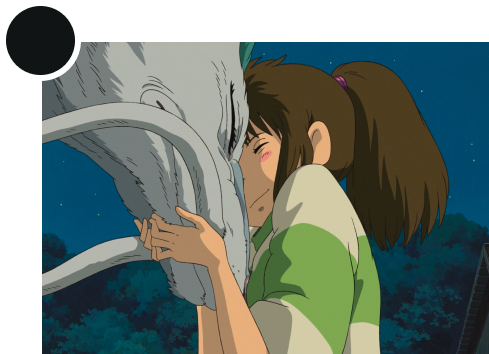
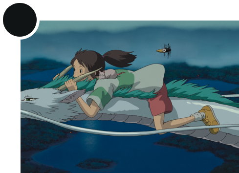
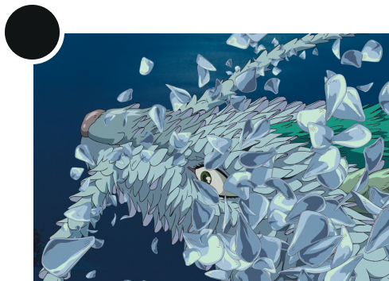
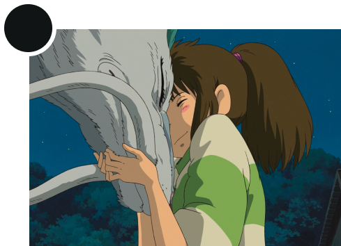
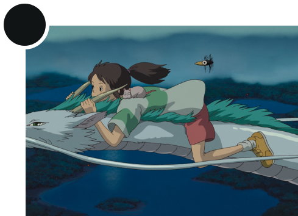
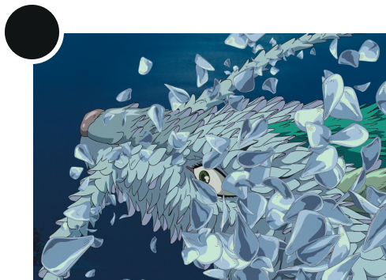

RYŪJIN
Dragon king and sea god
Ryūjin (龍神, lit. "Dragon God"), is the tutelary deity of the sea in Japanese mythology. This Japanese dragon, symbolizing the power of the ocean, is considered a good god and patron of Japan, since the Japanese population has for millennia lived off the bounty of the sea. Ryūjin lived in Ryūgū-jō, his palace under the sea built out of red and white coral, from where he controlled the tides with magical tide jewels.
Text from en.wikipedia.org/wiki/Ryūjin

Utagawa Kuniyoshi, Tamatora has recovered the pearl from the palace on the Dragon king, undefined date
 Implicit reference
Implicit reference
 Explicit reference
Explicit reference


 




